Gratis · Código abierto (MIT) · Windows y Linux
Diagnóstico de tu coche
desde el portátil
Averías, valores en directo y un asistente de IA que hace las comprobaciones por ti. Para VAG antiguos con cable KKL y para cualquier coche con OBD2.

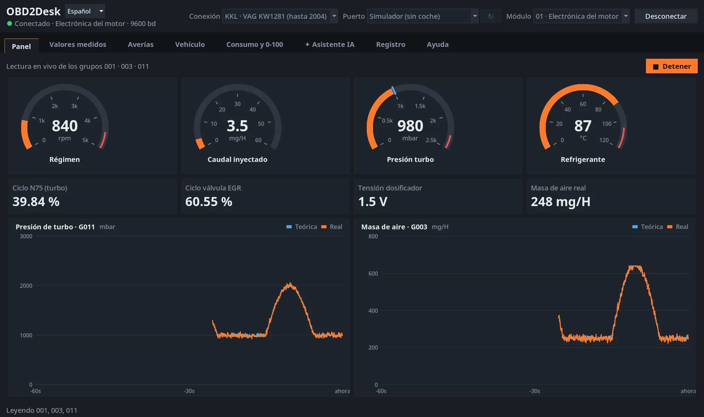
VAG antiguos por KKL
Habla KW1281, el protocolo de SEAT, VW, Audi y Skoda hasta ~2004, que un lector OBD2 normal no entiende. Con los grupos de valores medidos de los TDI de bomba rotativa e inyector-bomba y de los gasolina, y escanea todos los módulos (motor, ABS, airbag, cuadro…) de una vez.
Cualquier OBD2 con ELM327
Con un ELM327 USB, Bluetooth o WiFi lee las averías de cualquier marca con su significado (9533 códigos genéricos, también pendientes y permanentes), los datos congelados, los monitores para la ITV, el VIN y decenas de valores de cualquier coche con OBD2/EOBD. Si la búsqueda automática falla, prueba uno a uno los protocolos de línea K (KWP2000 e ISO 9141) de los coches anteriores a CAN.
Un asistente que comprueba
Cuéntale el síntoma: la IA lee ella misma las averías y los valores, te pide que arranques o aceleres y te da un diagnóstico razonado.
- 21centralitas VAG por cable KKL
- 10 000+códigos de avería descritos
- 50valores OBD2 en directo
- 36grupos VAG con nombre, en 3 tipos de motor
- 3proveedores de IA
- 2idiomas: español e inglés
Todo lo que hace
Panel en directo
Relojes y gráficas de los últimos 60 segundos. Con el cable KKL ves régimen, caudal inyectado, presión de turbo frente a la teórica, masa de aire, ciclo de la N75 y de la EGR; en un VAG de gasolina, carga, mariposa, avance de encendido y tiempo de inyección. Con un ELM327, régimen, velocidad, temperaturas, carga, caudalímetro, mariposa y tensión.
Consumo y cronómetro 0-100
Consumo instantáneo y medio en L/100 km, litros gastados, distancia y tiempo del trayecto, con su gráfica. Usa el dato de consumo de la centralita si lo da; si no, lo calcula con el caudalímetro o, en coches sin él, con la presión del colector y la cilindrada. Reconoce solo si es gasolina o diésel.
Cronómetro 0-100 km/h, que también te da el tiempo de 0 a 50. No hay que pulsar nada al salir: con el coche parado se pone en espera, empieza a contar en cuanto el coche se mueve y se para solo al llegar a 100. Guarda tus últimas medidas y la mejor. Mídelo solo en un circuito o en un lugar cerrado al tráfico.
Con el cable KKL, en un TDI calcula el consumo en L/h con el caudal inyectado (esa centralita no da la velocidad, así que ahí no hay 0-100); en un VAG de gasolina, consumo en L/100 km, distancia y 0-100 con la masa de aire y la velocidad de la centralita.

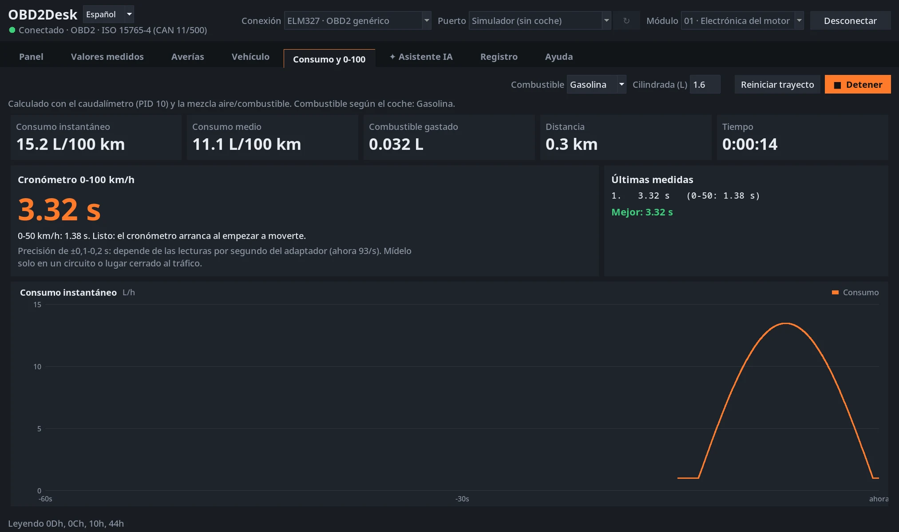
Valores medidos, gráficas y grabación
Elige los grupos de valores medidos VAG (001 inyección, 003 caudalímetro y EGR, 011 turbo…), con el nombre de cada valor según el motor: TDI de bomba rotativa, TDI inyector-bomba o gasolina. O los PIDs OBD2 que tu coche soporta, y míralos en una tabla en directo. Haz clic en una fila (Ctrl+clic, hasta cuatro) y la verás en una gráfica en vivo con el último minuto.
Grabar CSV guarda cada lectura con su tiempo. Ábrela luego en el visor de CSV del propio programa: pasa el ratón para ver los valores, arrastra para ampliar un tramo y mira el mínimo, la media y el máximo. También se abre en Excel o LibreOffice.

Averías
Códigos VAG de 5 cifras con el componente, el tipo de fallo y si es intermitente; también los 16xxx-18xxx de los VAG con OBD, traducidos a su código P, con más de 500 códigos P1 propios de VAG descritos (también al leerlos por OBD2). Con Escanear todos los módulos recorre motor, cambio, ABS, airbag, cuadro, confort… y te lista las averías de cada uno.
En OBD2, averías memorizadas, pendientes y permanentes, el testigo MIL y los datos congelados: régimen, temperatura, carga y demás valores del motor en el momento exacto en que saltó la avería.
Puedes borrarlas (siempre pide confirmación) y generar un informe para imprimir o guardar en PDF, útil para el taller o al vender el coche. Recuerda: borrar un código no repara la avería.
¿Qué significa un código? Búscalo en la lista de códigos OBD2, válida para cualquier marca, o en la de códigos de avería VAG.

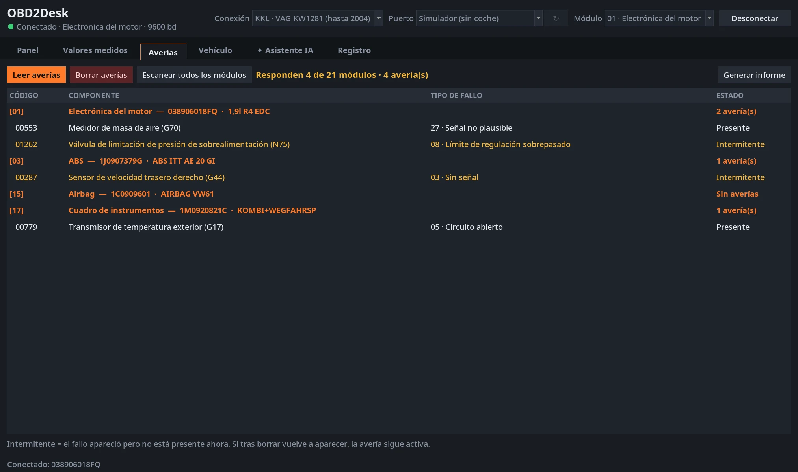
Historial de cada coche
Cada lectura, borrado y escaneo de averías se guarda solo, coche por coche (lo reconoce por el VIN o por su centralita). Al leer las averías te dice qué ha cambiado desde la última vez: las nuevas, las que ya no aparecen y las que se repiten.
En Historial repasas todos los diagnósticos de cada coche, aunque no esté conectado. Así sabes si una avería ha vuelto después de borrarla o si viene de lejos.

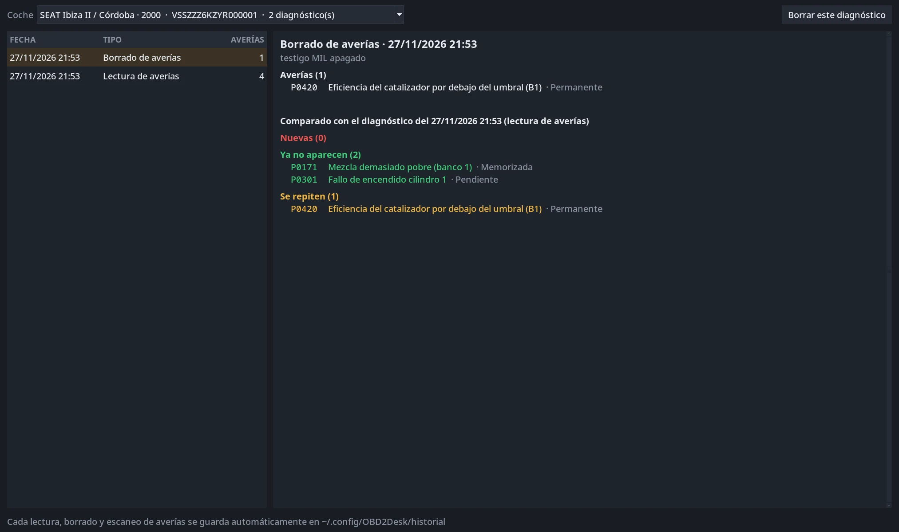
Vehículo, otros módulos e ITV
Identificación de la centralita (referencia, software, codificación). Con el cable KKL puedes entrar en una veintena de centralitas: cambio, ABS, Climatronic, airbag, cuadro, inmovilizador, confort, radio…
En OBD2, el VIN descifrado (fabricante, país, año y modelo), la calibración de la centralita, la tensión de batería y los monitores de preparación: qué autodiagnósticos de emisiones están completos, lo que miran en la ITV.

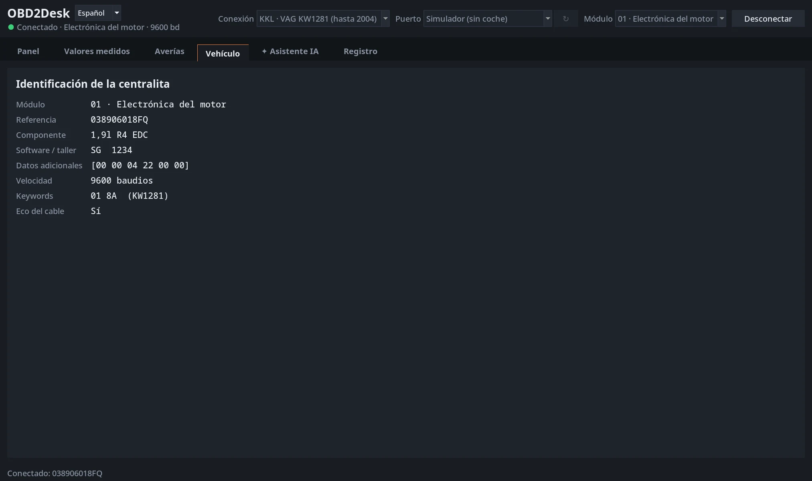
Diésel y gasolina VAG
Cada centralita VAG da sus valores medidos en grupos de cuatro, y lo que significa cada casilla depende del motor. OBD2Desk trae los grupos habituales de tres tipos de motor, con el nombre de cada valor:
- TDI de bomba rotativa (Bosch EDC15V, como el 1.9 TDI de 90 y 110 CV): inyección, turbo, caudalímetro y EGR, comienzo de inyección, limitaciones de caudal.
- TDI inyector-bomba (PD): además, el tiempo de inyección, el estado y la conmutación de cada inyector-bomba y los pedales.
- Gasolina: carga, encendido y avance, picado por cilindro, sondas lambda, adaptación de la mezcla y turbo.
Al conectar, el programa reconoce el motor por la identificación de la centralita y lo elige solo. En un gasolina, el Panel muestra sus propios relojes y la pestaña de consumo calcula los L/100 km y mide el 0-100 con la velocidad de la centralita.

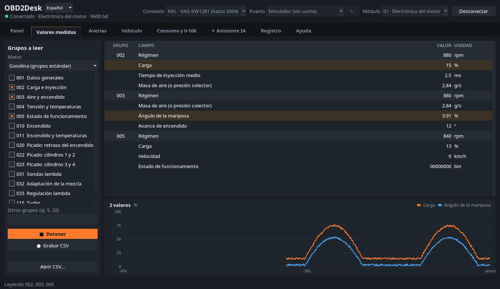
Manual dentro del programa
La pestaña Ayuda explica cada parte del programa: qué cable usar y cómo conectarlo, qué muestra cada pestaña, cómo se calcula el consumo, qué hace el asistente IA con tus datos y dónde se guardan las grabaciones, los informes y el historial.
Está en español y en inglés, como el resto del programa, y no necesita internet.

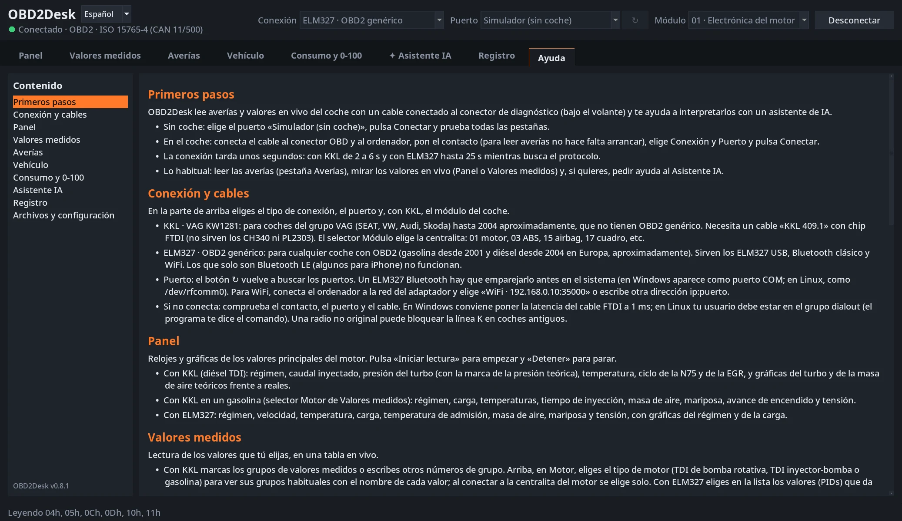
Test de actuadores y ajustes básicos
Con el cable KKL, OBD2Desk ya no solo lee: también puede pedir a la centralita que active sus componentes o que entre en ajuste básico.
- Test de actuadores: la centralita activa uno a uno sus relés, electroválvulas, inyectores y testigos para comprobar que funcionan (se oye el clic o se enciende el testigo). Cada uno sigue activo hasta pasar al siguiente.
- Ajustes básicos: comienzo de inyección (calado de la bomba) y EGR desactivada en el TDI, adaptación de la mariposa y ajuste del ralentí en el gasolina, o cualquier grupo del manual de taller, con sus valores en vivo.
Antes de empezar, cada ventana explica las condiciones (motor parado, contacto puesto…) y pide confirmarlas. Probado con los simuladores y en coche.

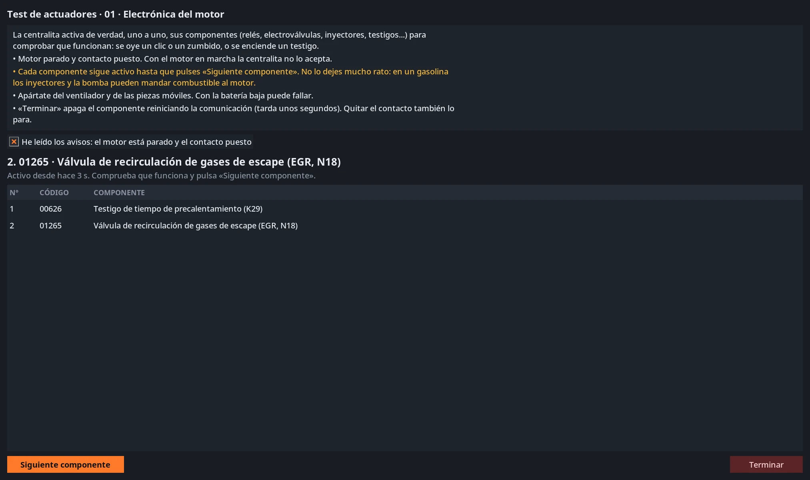
Adaptación y codificación
Con el cable KKL puedes leer y cambiar los canales de adaptación y la codificación de la centralita, con los valores del manual de taller de tu coche.
- Primero se prueba, después se guarda: la centralita usa el valor nuevo sin guardarlo para que compruebes el resultado; si cierras sin guardar, vuelve al de antes.
- Con vuelta atrás: cada cambio pide confirmación y queda apuntado con el valor de antes; «Volver al valor anterior» lo recupera.
- Código de acceso (login) para los canales que lo piden, y código de taller.
Escribe en la centralita: úsalo solo con los valores del manual. Probado con los simuladores y en coche.

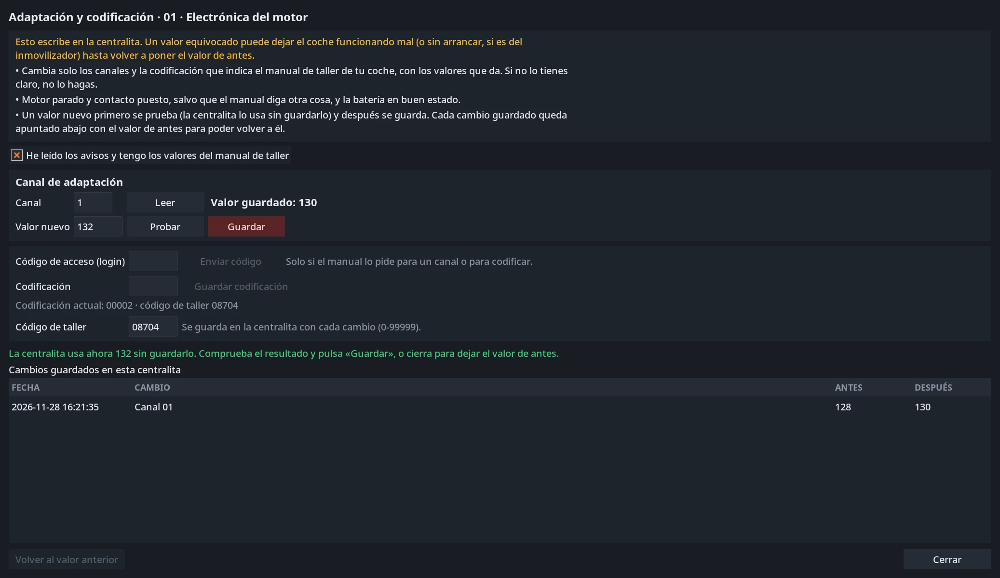
- Ayuda integrada: una pestaña con el manual de cada parte del programa.
- Simulador incluido: prueba todo sin coche eligiendo el puerto «Simulador (sin coche)».
- Un solo archivo: no hay que instalar Python ni nada más.
- Registro de toda la comunicación, con modo de depuración, por si algo falla.
- Sesión estable: mantiene viva la conexión KW1281 y avisa si se pierde.
- Informe de diagnóstico en HTML, listo para imprimir o guardar como PDF, con la comparación con el diagnóstico anterior.
- Avisa de versiones nuevas al arrancar.
- En español e inglés: el idioma se cambia en el selector junto al nombre del programa.
Qué puedes hacer con cada cable
El cable KKL habla el protocolo propio de los VAG antiguos y entra en todas sus centralitas; el ELM327 habla OBD2, el estándar de emisiones que tienen todos los coches modernos. Esto es lo que hace OBD2Desk con cada uno.
| Función | Cable KKL · VAG KW1281 | ELM327 · OBD2 |
|---|---|---|
| Leer y borrar averías | Sí. códigos VAG de 5 cifras, con tipo de fallo e intermitente | Sí. memorizadas, pendientes y permanentes; 9533 códigos genéricos de cualquier marca y P1 de VAG descritos |
| Escanear todas las centralitas | Sí. 21 direcciones: motor, ABS, airbag, cuadro, confort… | No |
| Datos congelados de la avería | No | Sí. |
| Monitores de preparación (ITV) | No | Sí. |
| Identificación | Sí. referencia, software y codificación de la centralita | Sí. VIN descifrado, calibración (CALID/CVN) y tensión |
| Panel con relojes y gráficas | Sí. TDI y gasolina | Sí. |
| Valores medidos en tabla y gráfica | Sí. grupos, con nombre según el motor | Sí. hasta 50 PIDs, los que dé el coche |
| Grabar CSV y visor de grabaciones | Sí. | Sí. |
| Consumo del trayecto | Sí. TDI en L/h; gasolina en L/100 km | Sí. L/100 km |
| Cronómetro 0-100 km/h | Sí. gasolina (el TDI no da la velocidad) | Sí. |
| Historial de cada coche | Sí. | Sí. |
| Informe para imprimir o PDF | Sí. | Sí. |
| Asistente IA con diagnóstico guiado | Sí. | Sí. |
| Simulador para probar sin coche | Sí. | Sí. |
| Test de actuadores y ajustes básicos | Sí. componentes uno a uno; mariposa, calado de la bomba, EGR… | No |
| Canales de adaptación y codificación | Sí. probar antes de guardar, login y registro para volver atrás | No |
Asistente IA: diagnóstico guiado
No es un chat que adivina: el asistente usa el programa para comprobar sus hipótesis con datos de tu coche.
- 1
Cuéntale qué le pasa
«Le falta potencia al acelerar y echa humo negro». O pulsa Analizar averías del vehículo.
- 2
Comprueba por su cuenta
Lee las averías, mira en el historial si son nuevas o ya habían salido, y lee o graba los grupos o PIDs que importan durante un acelerón o un calentamiento.
- 3
Te pide ayuda cuando hace falta
«Arranca el motor y da un acelerón en vacío». Pulsas Hecho o No puedo y sigue.
- 4
Diagnóstico razonado
Causas por orden de probabilidad con la evidencia, qué hacer de lo más barato a lo más caro y si puedes circular. Si se lo pides, te deja el informe listo para imprimir con su diagnóstico.
Qué puede hacer el asistente
- Leer las averías de la centralita, con los datos congelados y los monitores en OBD2.
- Leer valores en directo (presión del turbo, masa de aire, temperaturas…), una vez o varias veces seguidas para ver cómo cambian, por ejemplo durante un acelerón.
- Grabar valores hasta 2 minutos (por ejemplo, mientras se calienta el motor) y analizar el mínimo, la media y el máximo. La grabación queda en un CSV que puedes abrir tú en el visor.
- Consultar el historial del coche: qué averías son nuevas, cuáles volvieron después de borrarlas y cuáles vienen de lejos.
- Generar el informe con su diagnóstico incluido, listo para imprimir o guardar en PDF y llevar al taller.
- Pedirte una acción (arrancar, mantener 2500 rpm, mirar un manguito) y esperar a que la hagas.
- Borrar las averías, siempre con tu confirmación, y comprobar cuáles vuelven a salir.
- Revisar el registro del programa si falla la conexión, para decirte qué pasa.

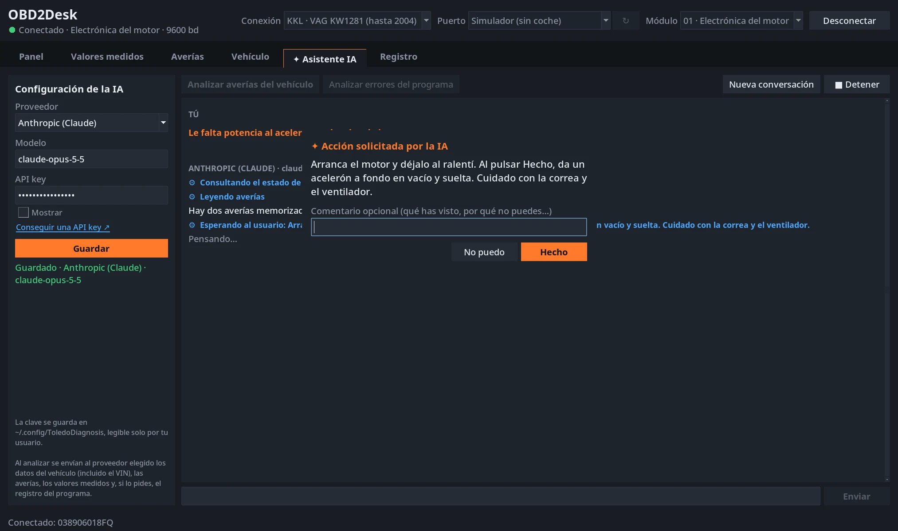

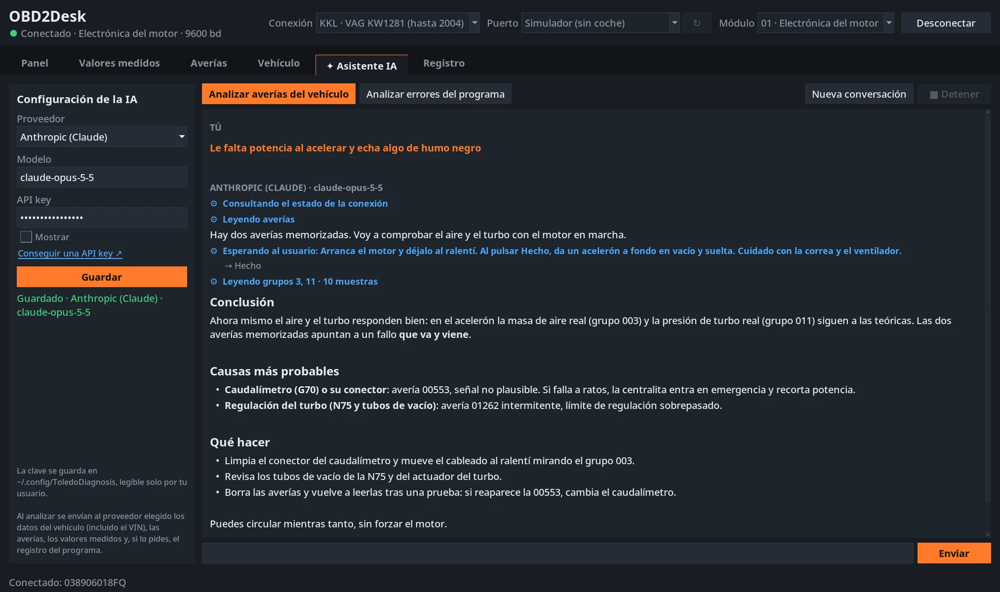
Capturas con el simulador. Las lecturas y la ventana de acción son reales; el texto del diagnóstico es un ejemplo de cómo responde.
Proveedores
Claude de Anthropic (por defecto), OpenAI o DeepSeek. El modelo se puede cambiar.
Necesitas tu propia clave de API: Anthropic · OpenAI · DeepSeek.
Coste
Pagas el consumo directamente al proveedor; el programa es gratis. Con Claude, una consulta cuesta céntimos y un diagnóstico guiado de unas 10 comprobaciones, del orden de 0,05 a 0,20 €.
Privacidad
Al analizar se envían al proveedor que elijas los datos del vehículo (incluido el VIN), las averías, los valores medidos y, si lo pides, el registro del programa. La clave se guarda solo en tu equipo.
Qué cable necesitas
Depende del coche. Si es un VAG anterior a 2004 (sobre todo diésel), casi seguro necesitas el cable KKL: muchos no responden a OBD2 genérico aunque tengan el conector.
VAG hasta ~2004 · KW1281
Cable KKL VAG-COM 409.1 con chip FTDI
USB, unos 10-20 €. Conecta a la línea K (pin 7) del conector de diagnóstico.
- Chip FTDI FT232RL/FT232RQ. En Windows, el Id. de hardware debe ser
VID_0403&PID_6001. - Los cables con interruptor de 4 posiciones (Fiat ECU Scan) valen: usa la posición 1 para VAG.
- Evita los chips CH340/CH341 (
VID_1A86) y PL2303: no hacen bien el arranque a 5 baudios. - No sirven los ELM327 con interruptor HS-CAN/MS-CAN (son para Ford) ni se recomienda el «K+CAN Commander».
- Hay FTDI falsos: si el puerto aparece pero no comunica, prueba un driver anterior.
Cualquier coche con OBD2/EOBD
Adaptador ELM327 (USB, Bluetooth o WiFi)
Gasolina desde 2001 y diésel desde 2003-2004 en Europa. Los hay por menos de 15 €.
- USB o Bluetooth clásico: se empareja en el sistema y aparece como puerto COM (Windows) o
/dev/rfcomm0(Linux). - WiFi: conecta el portátil a la red WiFi del adaptador y elige el puerto «WiFi · 192.168.0.10:35000» (o escribe su dirección si es otra).
- Muchos clones dicen «v2.1» y son v1.0 incompletos; el programa está preparado para trabajar con ellos.
- Los ELM327 solo BLE (algunos para iPhone) no funcionan: no crean puerto serie.
- El ELM327 no sirve para KW1281: para un VAG antiguo necesitas el cable KKL.
El conector de diagnóstico suele estar bajo el salpicadero, en el lado del conductor. Una radio no original puede bloquear la línea K: si no conecta, desconéctala para probar. Más detalles en la guía Cable KKL 409.1: cómo elegir uno que funcione.
Conectar un ELM327 Bluetooth: emparejar y elegir su puerto COM
Un ELM327 Bluetooth funciona como un cable serie sin cable. Cuando lo emparejas, el sistema crea un puerto serie virtual (un puerto COM en Windows, /dev/rfcomm0 en Linux) y el programa habla con él igual que con un adaptador USB. Por eso en OBD2Desk no se busca «el Bluetooth»: se elige ese puerto. Son dos pasos: primero emparejar desde el sistema y después conectar desde el programa.
Windows 10 y 11
- Enchufa el ELM327 al coche y pon el contacto: se enciende su luz.
- En Configuración → Bluetooth y dispositivos → Agregar dispositivo → Bluetooth, elige el adaptador (suele llamarse OBDII, OBD2 o V-LINK). Si pide PIN, prueba
1234,0000o6789. - Mira qué puerto le ha dado: Más opciones de Bluetooth → pestaña Puertos COM, el de dirección Saliente (por ejemplo, COM5). También sale en Administrador de dispositivos → Puertos (COM y LPT) como «Vínculo serie estándar a través de Bluetooth».
- En el programa: Conexión ELM327, Puerto ese COM y Conectar. El programa suele preseleccionarlo.
Es normal que Windows lo muestre como «Emparejado» y no como «Conectado»: la conexión se abre al pulsar Conectar en el programa. Si hay dos puertos COM y uno no responde, prueba el otro.
Linux
- Enchufa el ELM327 y pon el contacto.
- Empareja desde los ajustes de Bluetooth del escritorio o con
bluetoothctl:scan on,pair AA:BB:CC:DD:EE:FFytrust AA:BB:CC:DD:EE:FF(la MAC es la que aparece al buscar). - Linux no crea el puerto solo. Créalo con
sudo rfcomm bind 0 AA:BB:CC:DD:EE:FFy tendrás/dev/rfcomm0. Hay que repetirlo tras reiniciar el ordenador. - En el programa: Conexión ELM327, Puerto
/dev/rfcomm0y Conectar.
Si no tienes el comando rfcomm: en Fedora instala bluez-deprecated; en Arch, bluez-deprecated-tools. En Debian, Ubuntu y Mint ya viene con bluez.
El ELM327 solo admite una conexión a la vez: si lo has usado con el móvil (Torque, Car Scanner…), cierra esa app o desactiva el Bluetooth del móvil antes de conectar desde el ordenador. Guía completa, con WiFi y problemas típicos: Conectar un ELM327 Bluetooth o WiFi.
Coches y centralitas compatibles
Todo lo que sigue sale de las tablas del propio programa.
Cable KKL · KW1281
SEAT, Volkswagen, Audi y Skoda hasta ~2004
Los VAG con el protocolo KW1281, sobre todo los anteriores al OBD2 obligatorio en diésel. Si una centralita habla el protocolo más moderno (KWP2000), el programa lo detecta y te lo dice: entonces usa un ELM327.
Las 21 centralitas que puede leer y escanear:
01Electrónica del motor02Cambio automático03ABS08Climatronic09Electrónica central21Airbag22Columna de dirección23Cuadro de instrumentos25Gateway (bus de datos)34Tracción total (Haldex)37Inmovilizador53Cierre centralizado54Memoria asiento conductor55Navegación69Alarma / habitáculo70Módulo central de confort85Faros (alcance / xenón)86Radio101Presión de neumáticos118Ayuda al aparcamiento119Teléfono
ELM327 · OBD2 / EOBD
Cualquier marca con OBD2
En Europa, gasolina desde 2001 y diésel desde 2003-2004; en EE. UU., desde 1996. Busca el protocolo solo (CAN, KWP2000, ISO 9141 o J1850, según el adaptador) y, si no lo encuentra, prueba uno a uno los de línea K.
- Los 9533 códigos de avería genéricos (P0, P2, B, C y U) de cualquier marca con su descripción en español, y las 538 averías P1 de VAG si el VIN es de SEAT, VW, Audi o Skoda.
- VIN descifrado para 64 fabricantes, con el modelo en los VAG.
Los 50 valores OBD2 que puede leer
- Carga del motor
- Temp. refrigerante
- Corrección corto plazo B1
- Corrección largo plazo B1
- Corrección corto plazo B2
- Corrección largo plazo B2
- Presión combustible
- Presión colector (MAP)
- Régimen motor
- Velocidad
- Avance encendido
- Temp. aire admisión
- Caudal de aire (MAF)
- Posición mariposa
- Sonda O2 B1S1
- Sonda O2 B1S2
- Sonda O2 B1S3
- Sonda O2 B1S4
- Sonda O2 B2S1
- Sonda O2 B2S2
- Tiempo desde arranque
- Distancia con testigo MIL
- Presión rail (rel. vacío)
- Presión rail combustible
- Lambda sonda B1S1 (banda ancha)
- EGR comandada
- Error EGR
- Purga EVAP comandada
- Nivel de combustible
- Calentamientos desde borrado
- Distancia desde borrado
- Presión barométrica
- Lambda sonda B1S1 (corriente)
- Temp. catalizador B1S1
- Temp. catalizador B2S1
- Tensión módulo de control
- Carga absoluta
- Lambda comandada
- Mariposa relativa
- Temp. ambiente
- Mariposa absoluta B
- Pedal acelerador D
- Pedal acelerador E
- Actuador mariposa comandado
- Tiempo con testigo MIL
- Tiempo desde borrado
- Etanol en combustible
- Pedal acelerador relativo
- Temp. aceite
- Consumo de combustible
Grupos de valores medidos VAG por tipo de motor
Orientativo: los nombres pueden variar según la centralita. Las unidades las calcula el programa con la fórmula que envía la propia centralita, así que se leen también los grupos que no están en la lista.
TDI bomba rotativa (EDC15V) · 9 grupos
| Grupo | Qué muestra |
|---|---|
| 001 | Inyección Régimen · Caudal inyectado · Tensión dosificador/émbolo · Temp. refrigerante |
| 002 | Acelerador Régimen · Pedal acelerador · Estado de funcionamiento · Temp. refrigerante |
| 003 | EGR / caudalímetro Régimen · Masa aire teórica · Masa aire real · Ciclo válvula EGR |
| 004 | Comienzo de inyección Régimen · Comienzo inyección teórico · Comienzo inyección real · Ciclo válvula |
| 007 | Temperaturas Temp. combustible · Valor 2 · Valor 3 · Temp. refrigerante |
| 008 | Limitación de caudal Régimen · Caudal solicitado · Limitación por régimen · Limitación por masa aire |
| 010 | Aire / presiones Masa de aire · Presión atmosférica · Presión colector · Pedal acelerador |
| 011 | Turbo Régimen · Presión sobrealim. teórica · Presión sobrealim. real · Ciclo N75 |
| 013 | Marcha suave (cilindros) Cilindro 1 · Cilindro 2 · Cilindro 3 · Cilindro 4 |
TDI inyector-bomba (PD) · 12 grupos
| Grupo | Qué muestra |
|---|---|
| 001 | Inyección Régimen · Caudal inyectado · Tiempo de inyección teórico · Temp. refrigerante |
| 002 | Acelerador Régimen · Pedal acelerador · Estado de funcionamiento · Temp. refrigerante |
| 003 | EGR / caudalímetro Régimen · Masa aire teórica · Masa aire real · Ciclo válvula EGR |
| 004 | Inyectores-bomba Régimen · Comienzo inyección teórico · Tiempo de inyección real · Ángulo de sincronización |
| 006 | Pedales y regulador de velocidad Velocidad · Interruptores de freno y embrague · Pedal acelerador · Regulador de velocidad |
| 007 | Temperaturas Temp. combustible · Valor 2 · Temp. colector de admisión · Temp. refrigerante |
| 008 | Limitación de caudal Régimen · Caudal solicitado · Limitación al cambiar de marcha · Limitación por humos |
| 010 | Aire / presiones Masa de aire · Presión atmosférica · Presión colector · Pedal acelerador |
| 011 | Turbo Régimen · Presión sobrealim. teórica · Presión sobrealim. real · Ciclo N75 |
| 013 | Marcha suave (cilindros) Cilindro 1 · Cilindro 2 · Cilindro 3 · Cilindro 4 |
| 018 | Estado de los inyectores-bomba Inyector 1 · Inyector 2 · Inyector 3 · Inyector 4 |
| 023 | Conmutación de los inyectores-bomba Cilindro 1 · Cilindro 2 · Cilindro 3 · Cilindro 4 |
Gasolina (grupos estándar) · 15 grupos
| Grupo | Qué muestra |
|---|---|
| 001 | Datos generales Régimen · Temp. refrigerante · Regulación lambda · Condiciones del ajuste básico (o lambda banco 2) |
| 002 | Carga e inyección Régimen · Carga · Tiempo de inyección medio · Masa de aire (o presión colector) |
| 003 | Aire y encendido Régimen · Masa de aire (o presión colector) · Ángulo de la mariposa · Avance de encendido |
| 004 | Tensión y temperaturas Régimen · Tensión · Temp. refrigerante · Temp. aire de admisión |
| 005 | Estado de funcionamiento Régimen · Carga · Velocidad · Estado de funcionamiento |
| 010 | Encendido Régimen · Carga · Ángulo de la mariposa · Avance de encendido |
| 011 | Encendido y temperaturas Régimen · Temp. refrigerante · Temp. aire de admisión · Avance de encendido |
| 020 | Picado: retraso del encendido Cilindro 1 · Cilindro 2 · Cilindro 3 · Cilindro 4 |
| 022 | Picado: cilindros 1 y 2 Régimen · Carga · Retraso cilindro 1 · Retraso cilindro 2 |
| 023 | Picado: cilindros 3 y 4 Régimen · Carga · Retraso cilindro 3 · Retraso cilindro 4 |
| 031 | Sondas lambda Banco 1, sonda 1 · Banco 1, sonda 2 · Banco 2, sonda 1 · Banco 2, sonda 2 |
| 032 | Adaptación de la mezcla Banco 1, ralentí · Banco 1, carga parcial · Banco 2, ralentí · Banco 2, carga parcial |
| 033 | Regulación lambda Regulación lambda banco 1 · Tensión sonda banco 1 · Regulación lambda banco 2 · Tensión sonda banco 2 |
| 115 | Turbo Régimen · Carga · Presión turbo teórica · Presión turbo real |
| 118 | Turbo: válvula y temperatura Régimen · Temp. aire de admisión · Ciclo válvula del turbo · Presión antes de la mariposa |
Descargar e instalar
Gratis y de código abierto. Cada versión está en GitHub Releases.
Windows 10 y 11 (64 bits)
Descargar .exe- Descárgalo y ábrelo; no hace falta instalar nada.
- Windows SmartScreen avisará la primera vez porque no está firmado: Más información → Ejecutar de todas formas.
- Cable FTDI: pon la latencia a 1 ms en Administrador de dispositivos → Puertos → USB Serial Port → Propiedades → Configuración de puerto → Opciones avanzadas → Temporizador de latencia. Evita cortes de comunicación.
Linux (64 bits)
Paquete .tar.gzUbuntu 20.04+, Debian 11+, Linux Mint 20+, Fedora, openSUSE, Arch…
tar xzf OBD2Desk-*-linux-x86_64.tar.gz
cd OBD2Desk
./instalar.sh
sudo usermod -aG dialout $USER- El instalador lo añade al menú de aplicaciones, sin sudo.
./instalar.sh --desinstalarlo quita. Si tenías la versión anterior (Toledo Diagnosis), la sustituye y conserva tu configuración. - Con el último comando das permiso para usar el cable (en Arch el grupo es
uucp). Cierra sesión y vuelve a entrar. - ELM327 Bluetooth: emparéjalo y enlázalo con
sudo rfcomm bind 0 AA:BB:CC:DD:EE:FF.
¿Prefieres el código? Con Python 3.10+ y tkinter: pip install -r requirements.txt y python gui.py. Instrucciones en el README.
Primeros pasos
- 1
Pruébalo sin coche
Elige el puerto «Simulador (sin coche)», pulsa Conectar y, en la pestaña Panel, Iniciar lectura.
- 2
Conecta al coche
Contacto puesto (para leer averías basta con el motor parado). Enchufa el cable al conector OBD y al portátil, elige Conexión y Puerto y pulsa Conectar (si es Bluetooth, antes empareja y busca su puerto COM). Con KKL tarda de 2 a 6 s; con ELM327, hasta 25 s (hasta un minuto si tiene que probar los protocolos de línea K).
- 3
Lee las averías
Pestaña Averías → Leer averías (en un VAG antiguo, Escanear todos los módulos para revisarlo entero). Guárdalas con Generar informe antes de borrar nada.
- 4
Mira los valores
Panel para el vistazo rápido; Valores medidos para elegir grupos o PIDs, verlos en gráfica y grabar un CSV; Consumo y 0-100 para el trayecto.
- 5
Pide ayuda a la IA
En ✦ Asistente IA, guarda tu clave, describe el problema y deja que haga las comprobaciones.
¿Qué grupos miro?
En Valores medidos, elige tu tipo de motor en Motor y marca los grupos. Para empezar: el 001 (inyección) y el 011 (turbo) en un TDI, y el 002 (carga) y el 003 (aire y encendido) en un gasolina.
La lista completa de cada motor está en Coches y centralitas compatibles, y qué mirar según el síntoma, en la guía Valores medidos del 1.9 TDI.
Problemas frecuentes
No conecta con el cable KKL («Sin byte de sincronismo 0x55»)
Revisa que el contacto esté puesto y el puerto sea el correcto. Comprueba que el cable lleve chip FTDI y no CH340, que no sea un FTDI falso y, si tiene interruptor, que esté en la posición 1. Una radio no original puede bloquear la línea K: desconéctala para probar.
Dice «Keywords KWP2000»
La centralita no habla KW1281 sino KWP2000. Prueba con un ELM327 en modo OBD2.
La sesión KKL se corta
En Windows, pon la latencia del puerto FTDI a 1 ms (ver Descargar). En Linux el programa la ajusta solo.
ELM327: «el vehículo no responde a OBD2»
Pon el contacto. Si es un VAG anterior a 2004, probablemente no tenga OBD2 genérico: necesitas el cable KKL.
ELM327: coche antiguo con conector OBD2 que no conecta (p. ej. Mercedes)
Los coches anteriores a CAN (más o menos hasta 2005-2007) hablan OBD2 por la línea K, y con algunos coches y adaptadores la búsqueda automática del ELM327 no encuentra el protocolo. Por eso el programa prueba después KWP2000 (inicio rápido y lento) e ISO 9141 uno a uno, y en el Registro indica cuál ha funcionado. Si tampoco así responde, puede que el coche no cumpla OBD2 aunque tenga el conector (en Europa es obligatorio desde 2001 en gasolina y desde 2004 en diésel; muchos Mercedes anteriores solo responden a las herramientas de la marca) o que el adaptador sea un clon barato que no maneja bien la línea K.
No encuentro el puerto del ELM327 Bluetooth
El Bluetooth no se elige directamente: al emparejarlo, el sistema crea un puerto serie y ese es el que se selecciona (paso a paso). En Windows se crean dos puertos COM al emparejarlo: si uno no funciona, prueba el otro. En Linux hay que enlazarlo con sudo rfcomm bind 0 <MAC> y elegir /dev/rfcomm0.
Cómo conecto un ELM327 WiFi
El adaptador crea su propia red WiFi (suele llamarse «WiFi_OBDII», «OBDII» o «V-LINK»). Conecta el portátil a esa red, elige Conexión ELM327 y, en Puerto, «WiFi · 192.168.0.10:35000». Si tu adaptador usa otra dirección (por ejemplo 192.168.1.10), escríbela en el campo Puerto con el formato ip:puerto. Mientras estés conectado a su red no tendrás internet, así que el asistente IA no funcionará a la vez.
Linux: «Permission denied» al conectar
Tu usuario debe estar en el grupo del puerto serie: sudo usermod -aG dialout $USER (en Arch, uucp) y volver a iniciar sesión. El propio programa te dice el comando exacto.
Linux (Ubuntu/Mint): el cable no aparece como /dev/ttyUSB0
El servicio brltty (para líneas braille) se apodera de muchos adaptadores USB-serie. Si no lo usas: sudo apt remove brltty.
El asistente dice «API key no válida», «sin saldo» o «modelo no encontrado»
Revisa la clave y la facturación en la web del proveedor. Si el modelo no existe, cambia su nombre en la configuración de la IA.
Windows avisa de que el programa no es seguro
Es SmartScreen: el ejecutable no está firmado digitalmente. Pulsa Más información → Ejecutar de todas formas. El código es público en GitHub.
Novedades por versión
Lo que ha ido llegando a OBD2Desk. El detalle de cada versión está en GitHub Releases.
v0.9.0
- Averías de cualquier marca con su significado: con un ELM327, los 9533 códigos genéricos OBD2 (motor y cambio, carrocería, chasis y red) salen descritos en español o en inglés. Antes, solo 107.
- Los propios de cada fabricante (P1…) se siguen describiendo en los VAG. Lista completa en códigos OBD2.
v0.8.1
- En la ventana de adaptación, el botón «Volver al valor anterior» ya no se ve cortado en inglés.
v0.8.0
- Canales de adaptación (cable KKL): leer, probar y guardar valores, con código de acceso (login) si el canal lo pide.
- Codificación (cable KKL): ver y cambiar la codificación de la centralita; Vehículo muestra la codificación y el código de taller.
- Cada cambio pide confirmación y queda apuntado con el valor de antes para poder volver a él.
v0.7.0
- Test de actuadores (cable KKL): la centralita activa uno a uno sus componentes para comprobar que funcionan.
- Ajustes básicos (cable KKL): adaptación de la mariposa, comienzo de inyección, EGR desactivada o cualquier grupo, con los valores en vivo.
- Las dos funciones piden confirmar las condiciones antes de empezar y, mientras duran, el asistente IA no puede usar la centralita.
v0.6.1
- En Valores medidos, la lista de grupos se desplaza con la rueda del ratón si no cabe en la ventana (con los 15 grupos de gasolina, «Abrir CSV...» quedaba oculto en pantallas pequeñas).
v0.6.0
- Pestaña Ayuda con el manual de cada parte del programa.
- 538 averías P1 de VAG descritas (antes 21), también al leerlas con un ELM327 si el coche es VAG.
- Selector de motor en Valores medidos: TDI de bomba rotativa, TDI inyector-bomba o gasolina, con los grupos habituales y el nombre de cada valor. Se elige solo al conectar.
- VAG de gasolina por KKL: Panel propio, consumo en L/100 km, distancia y cronómetro 0-100.
v0.5.0
- Pestaña Consumo y 0-100: consumo instantáneo y medio, litros, distancia y cronómetro 0-100 km/h con paso por 50.
- Gráfica en vivo de cualquier valor y visor de CSV con zoom y mínimo, media y máximo.
- Historial de cada coche: qué averías son nuevas, cuáles ya no salen y cuáles se repiten.
- El asistente IA puede grabar valores, consultar el historial y generar el informe.
v0.4.0
- Toledo Diagnosis pasa a llamarse OBD2Desk.
- Interfaz, informe y descripciones de averías en inglés; el asistente IA responde en el idioma elegido.
- Al actualizar se conserva la configuración, API keys incluidas.
v0.3.0
- Escaneo de todos los módulos VAG y tabla de averías VAG mucho más grande.
- En OBD2: datos congelados, averías permanentes, monitores de preparación, VIN descifrado y calibración.
- Informe de diagnóstico para imprimir o guardar en PDF, ELM327 WiFi y aviso de versión nueva.
v0.2.0
- Versión para Linux (Ubuntu, Debian, Mint, Fedora, openSUSE, Arch).
- ELM327: prueba uno a uno los protocolos de línea K de los coches anteriores a CAN.
v0.1.0
- Primera versión: cable KKL para VAG y ELM327 para OBD2, Panel, valores medidos con grabación CSV, asistente IA y simulador.